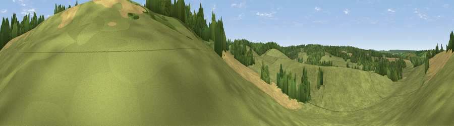

Viewpoint near Petham
#42149 in England · top 78% of its area beats it · near Petham · path 88 mWhere it is
The exact computed spot (TR 13537 50822). Click the marker for map links.
Public access: the nearest public right of way is about 88 m away — the final stretch may cross private land. Computed from Natural England's CRoW access layer and OpenStreetMap rights of way — not the legal definitive map. Always verify locally.
The view, rendered

A 360° render of this exact spot computed from the terrain model, tree cover and land cover — summer colours, afternoon light, calibrated against photographs of famous viewpoints. Real trees, hedges and buildings will differ in detail.
The panorama
Grey silhouette: terrain skyline in each direction (720 bearings, Earth curvature and refraction included). Dashed green: skyline with trees (+15 m) and buildings (+8 m) as obstacles. Blue strip: how far the ground is visible on each bearing.
Where the view opens
Wedge length = distance to the farthest visible ground on that bearing (vegetation-aware). Rings at 10, 25 and 50 km.
What fills the view
63% grassland · 21% cropland · 16% woodland
Angular shares of the visible panorama (visual magnitude), not map area. Landscape diversity 0.40 (0–1 Shannon).
Key numbers
More beautiful places nearby
The staircase of upgrades: each row has a higher view potential than everything closer. Driving times are estimates from straight-line distance, calibrated against real road routing — check an actual route before setting out.
| Place | Direction | Drive | Score |
|---|---|---|---|
| Viewpoint near Petham | NNW · 3 km | ~7 min | 24.0 |
| Viewpoint near Stelling Minnis | SSW · 4 km | ~8 min | 26.5 |
| Viewpoint near Crundale | W · 5 km | ~11 min | 36.2 |
| Viewpoint near Wye | WSW · 8 km | ~15 min | 70.9 |
| Viewpoint near Brabourne | SSW · 9 km | ~17 min | 71.6 |
| Viewpoint near Brabourne | SSW · 9 km | ~18 min | 71.9 |
| Tolsford Hill | S · 13 km | ~24 min | 77.9 |
| Viewpoint near Capel-le-Ferne | SE · 17 km | ~29 min | 80.2 |
51.21665, 1.05625 · source: osm viewpoint · position refined by local search. Computed location — check access rights before visiting.